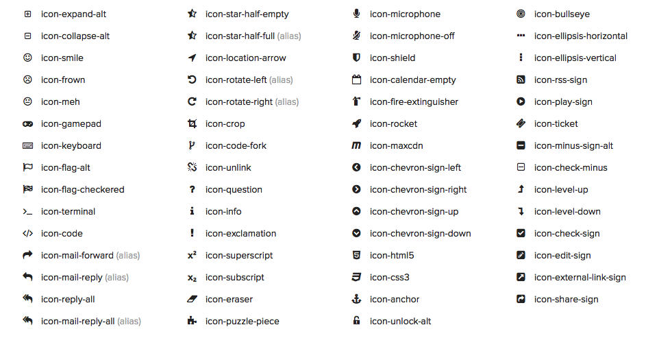

HELLO.
@mhemesath
communicate data
learn standards,
leverage tools,
shiv internet explorer
ME

CNDE
Center for Non-Destructive Evaluation
10 years ago
building graphs was HARD


4 years ago
adding graphs was EASY
Looks great Mike,
BUT can you add....

What is a modern data Visualizations
Nate Allen - @neight
Stop hacking chart libraries
Look to the browser landscape.
HTML can draw graphs too!
- 500
- 300
- 700
- 500
- 300
- 700
Fonts are Awesome!
- Cross Browser Support
- All styling properties of text
- Easy to implement
Font Awesome
A Game of Fonts
Building a font map in 5 steps
Step 1: Find A Map

Step 2: Get a Vector Graphics Editor
Step 3: Trace a path around each region.

Step 4. Export all regions as SVG files.
Step 5. Convert SVG files into font via fontcustom.
http://fontcustom.com/

SVG is great for drawing primitive shapes.
SVG Doesn't Work in IE 7 or 8

So try VML
// Creates canvas 320 × 200 at 10, 50
var paper = Raphael(10, 50, 320, 200);
// Creates circle at x = 50, y = 40, with radius 10
var circle = paper.circle(50, 40, 10);
// Sets the fill attribute of the circle to red (#f00)
circle.attr("fill", "#f00");
// Sets the stroke attribute of the circle to white
circle.attr("stroke", "#fff");
function randomPath(length, j) {
var path = "",
x = 10,
y = 0;
dotsy[j] = dotsy[j] || [];
for (var i = 0; i < length; i++) {
dotsy[j][i] = Math.round(Math.random() * 200);
if (i) {
x += 20;
y = 240 - dotsy[j][i];
path += "," + [x, y];
} else {
path += "M" + [10, (y = 240 - dotsy[j][i])] + "R";
}
}
return path;
}Don't describe the how, describe the what.
Imperative
vs.
Declarative
var numbers = [1,2,3,4,5]
var total = 0
for(var i = 0; i < numbers.length; i++) {
total += numbers[i]
}
console.log(total) //=> 15
var numbers = [1,2,3,4,5]
var total = numbers.reduce(function(sum, n) {
return sum + n
});
console.log(total) //=> 15Data-Driven Documents
D3 for short
for (var i=0; i < data.length; i++) {
var circle = document.createElement('circle');
circle.cx = area.x(data[i]);
circle.cy = area.y(data[i]);
circle.r = 5;
svg.appendChild(circle);
}svg.selectAll('circle').data(data)
.enter().append('circle')
.attr('cx', area.x())
.attr('cy', area.y())
.attr('r', 5);
var y = d3.scale.linear()
.range([height, 0])
.domain([min, max]);
var data = [{x: 0, y: 5}, {x: 1, y: 3}, {x: 2, y: 10}]
var area = d3.svg.area()
.x(function(d) { return x(d.x); })
.y0(height)
.y1(function(d) { return y(d.y); });
svg.append('path').datum(data).attr('d', area);
D3 does more!
DOM Selections, DOM Events, Transitions, Arrays, Math, XHR, Formatters, Colors, Scales, Ordinals, Shapes, Axes, Controls, Bundles, Chords, Clusters, Force Graphcs, Hierarchy, Histogram, Pack, Partition, Pie, Stack, Tree, Treemap, Geography, Projections, Streams, Dragging and ZoomingWant more?
Check out the examples http://bl.ocks.org/mbostock
D3 Doesn't Work in IE 7 or 8
D3 is awesome because its built on modern standards:
- ECMAScript 5 - es5-shim.js
- JSON - json3.js
- SVG - raphael.js
- DOM Selection API - sizzle.js
R2D3 is a customized build of D3 powered by RaphaelJS
<script src="d3.js"></script>

- Give IE a break
- Limit elements to ~ 1000 per/page
- Avoid transitions